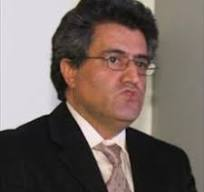

Sizinle ilgilenecek deneyimli uzmanlar.

Genel tıp alanında, özellikle diyabet ve beslenme tıbbı konusunda 20 yılı aşkın deneyime sahip. Almanca ve Türkçe konuşmaktadır.
İç hastalıkları ve önleyici tıp alanında uzmanlaşmıştır. Her yaş grubuna yönelik birinci basamak sağlık hizmetlerinde uzun yıllara dayanan deneyime sahiptir.
GKV ve PKV kapsamında sunduğumuz hizmetlerin tamamı Almanya sağlık standartlarına (SGB V) uygundur.
Kapsamlı fizik muayene, anamnez ve teşhis hizmetleri. Akut ve kronik hastalıkların yönetimi.
Randevu Al →GKV kapsamında ücretsiz Gesundheitscheck, kanser taramaları ve erken teşhis programları.
Randevu Al →Diyabet, hipertansiyon, tiroid hastalıkları ve diğer kronik durumların uzman takibi.
Randevu Al →STIKO tavsiyelerine uygun aşı programları. Grip, Covid-19, seyahat aşıları ve daha fazlası.
Randevu Al →DSGVO uyumlu güvenli platform üzerinden video muayene. KV-Safenet altyapısıyla koruma altında.
Randevu Al →İşe dönüş sertifikaları (AU), Krankschreibung, iş yeri muayenesi ve sigorta raporları.
Randevu Al →Vitamin D eksikliği, uyku düzeni ve beslenme alışkanlıklarının bağışıklık üzerindeki kanıtlanmış etkileri.
Almanya'da 20 milyon kişiyi etkileyen hipertansiyonda erken teşhis neden hayat kurtarır?
Güncel çalışmaların ışığında hangi beslenme modelinin metabolizma için daha faydalı olduğunu inceliyoruz.
2025'te zorunlu hale gelen ePA hakkında bilmeniz gereken her şey – avantajlar, gizlilik ve nasıl kullanılır.
Tükenmişlik sendromu ile kronik yorgunluğu ayırt etmek için pratik rehber ve profesyonel yardım alma zamanı.